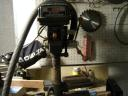

The next step in our Lasertag construction project is the preperation of the boxes for our components. We have decided to put all of the electronics in a backpack. But the backpack will need some I/O. We need a rj-45 for the gun, two for the arm-band, a usb for the key, and a hole for the power switch and power plug. How do we do it? We need square holes…
Well, the best and nicest way I can think to do it is to use a little thing called a roto-zip bit. I bought 5 of them at Home Depot for a few dollars. Luckily Karl has a drill press:

The pictures mostly speak for themselves. Basically we used a cardstock template:
One of my personally favorite websites is YoureTheManNowDog.com. (You may have noticed the cameo in episode 1.) Founded in 2001, an uncountable number of spoofs have been made, and are stored at the sister site, ytmnd.com. There you can setup your own account and create your own YoureTheManNowDog’s! I love it.
Also, being in Tampa, I live close to the Scientology headquarters in Clearwater. Recently a YoureTheManNowDog has been created that exposes some of the terrible things that the church of Scientology has done. They are a very dangerous cult using blackmail, scare tactics, and a strong legal team to achieve their ends.
Many people don’t know the specifics about their beliefs, nor are they aware of the underhanded tactics they use to shut down those who oppose them. I encourage everyone to see this ytmnd, then read on for how to help. (Click on the image below to see it in a new window.)
Seen it? Terrible isn’t it. But what can we do? Expose. How? Google bomb . If you are not familiar with the term, here is the Wikipedia article on it. Basically the procedure makes a certain page come to the top of search results for a certian term. In this case, the ytmnd will come up when someone searches for the word, Scientology. Then anyone looking for information will be shown the truth.
You can help! If you have any web page, blog, forum, in your signature, mailing list, anything, create links! Anywhere you use the word, Scientology, link it to http://theunfunnytruth.ytmnd.com/. The more links in place, the more Google’s search algorithm will believe it is the webpage most relevant to the word, Scientology. That is it! Simple. A successful Google-bomb will bring this site to light, and put Scientology under even more scrutiny. Perhaps over time the word Scientology will be associated with its horrific deeds, and be put to an end.
Ok, I have a seceret: I am a Myspace sellout. Everyone around me was like ooh yea, check out my myspace! Or Ooo, your myspace is sooo cool. Or, Wow, your myspace cures cancer. Well, so I made one, and added friends. I soon realized that Myspace.com is interesting. (Although it sucks too. Ads everywhere, people’s pages are often littered with cpu sucking garbage and animated gifs and crappy css.)
But the Myspace chain bullitens or picture comments are not what makes Myspace.com interesting. Its is the social network map that is what is interesting. But how can I see the big picture? And what does it look like? In my search on how to do this, I came across Ben Discoe’s website and read about his work with a similar website: friendster. I decided on a similar approach.
First, because I do not have direct access to Myspace.com’s database of friends, I would have to create my own local database, and then write a spider to crawl around and populate it. So I did. I wrote it in what I know best, are you ready people: bash scripting. You can look at it for yourself in the download below, its called myspace.robot. Basically it parses a myspace profile, grabs friends, pictures, music, interests, as much information that can be harvested, and then inserts it into the database. This robot is called by other scripts that say oh, pick a random profile. Or I have a robot caller that calls in a tree like fashion, starting at a given place and traversing so many levels (myspace.tree).
Once I have the information (friends in particular). We can use this information to create a map. At first I used imagemagick to generate an image. It sucked.
Graphviz is the perfect tool for the job. I feed it the nodes, and weights between nodes. It calculated the best positions to put the nodes. It is very configurable, including different ploting algorithms, graph styles, and output formats. It take all of this and put it into a php-mysql interface for others to input their graph-making requests. My server on the backend takes the top one on the queue, grabs the appropriate profiles, creates the friend-map, then sends an email to let the user know that the map is ready!
A simple map that includes you and your friends turns out to be pretty large. If you want to go any deeper than that you have to use svg. (bitmaps turn very large.) But how does the program know where to put each friend, realative to the other friends in the map? Answer: It uses the “howgoodofafriendareyou” metric. The more friends you have in common with another person, the better a friend you are.
I’ll have the link up in a while for the interface for others to make their own maps. You might be interested to see who myspace thinks their closest friend is.
My friends and I are currently constructing our own lasertag guns using this as a base.
Here is our checklist:
Construct electronic components using the above milestag components.
Get and modify vests to hold components
Melt aluminum and pour guns into molds! Rock on!
Connect it all together and play!
We’ve go the electronics together. The vests are on their way via UPS, and my friend Karl and I have the furnace ready and we can melt aluminum! We still need to put sensors on the vests, pour the guns, and interface it all together. But man, what an adventure!


 One of my personally favorite websites is
One of my personally favorite websites is 

{kind=link}
{kind=link}
{kind=link}
{kind=link}
{kind=link}